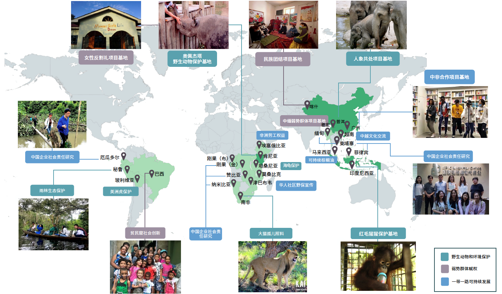
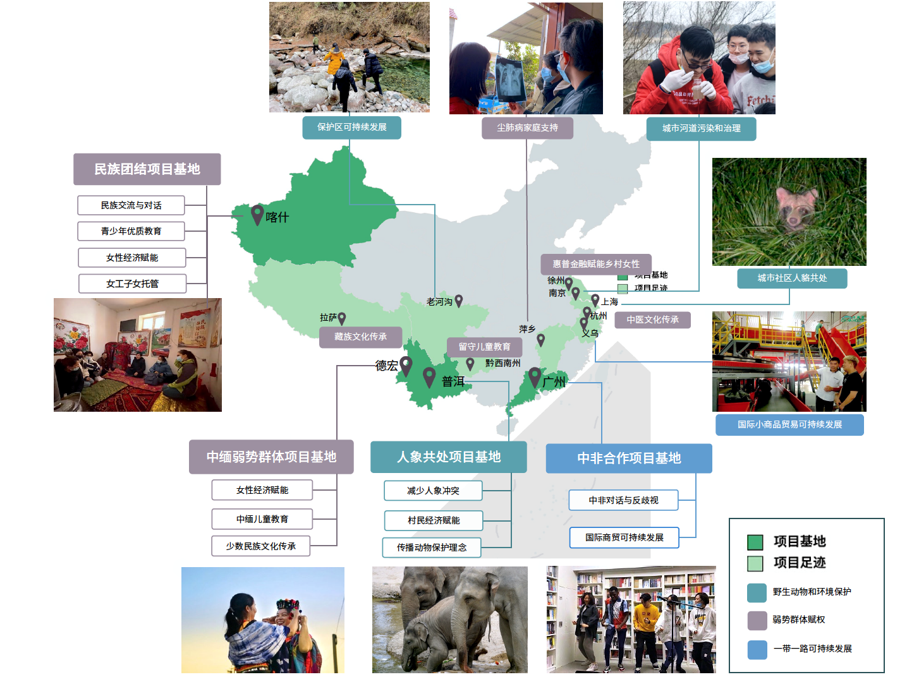

- Home
- Dashujiao Village and Elephants
- Progress of Coexistence Project
- Coexistence Worldwide
- Travel Guide

What impressions do elephants leave in your minds? Lovely? Handsome?
For the residents in Dashujiao Village, Yunnan, elephants are "dangerous".
In 2017, a group of wild Asian elephants migrated to this quiet village and stayed here. Compared with leaves and grass, the sugarcane and corn in farmers' land are more welcomed by them. After dining, they like to "play" around residents' homes, seemingly unaware that they are prone to causing severe damages.
“In 2020, almost 2.9 million yuan was compensated,” said the damage assessor who is in charge of insurance compensation in Dashujiao Village. “Most families have their fields invaded and destroyed by elephants almost once a month, and some families even face multiple encounters. Every family loses more than 10,000 yuan per year on crops."
How to reduce the threat of wild elephants to humans?
How to reverse the situation from being damaged to benefitting from the arrival of these elephants?
How do people and wildlife live together in harmony?
Dashujiao Village, and many other villages in Yunnan that wild elephants visit today, do need an answer.
China House
will build a project base
in Dashujiao Village
to help ease the conflict
between humans
and elephants.
On the one hand, China House will reduce the harm of wild elephants to the villagers through the installation and modification of animal repelling.For instance,China House will install elephant-deterrent lights and infrared cameras, and upgradeearly warning platforms including APP and WeChat Mini programs.
On the other hand, China House will also carry out local community development projects, such as developing the local product "Wild Elephant Tea". The Pu'er tea comes from tea gardens of local villagers.
who are willing to live in harmony with elephants. When customers purchase it, profits will go into villagers' pockets. All profits from this project will also be used for sustainable development projects. In addition,China House will help develop the local tourism industry and further empower villagers economically by "benefitting" from elephants, thereby promoting the harmonious coexistence of humans and wildlife.
China House is a social enterprise dedicated to global citizenship education.
We aim to cultivate a generation of global citizens in China through mentoring young people to conduct research on various global challenges, design professional projects, and finally implement sustainable development projects in the real world.
Founded in Kenya in 2014, now based in Shanghai, China House has been doing projects on Global Conservation, Global Human Development, and Sustainable Belt and Road. We work with international organizations, academic institutions, and multinational corporations to conduct researches and projects that help integrate China into global sustainable development.
In the meanwhile, like a field school, China House has engaged over 1,000 young people in Project-Based Learning (PBL) and global citizenship education programs in 27 countries across 4 continents. They have completed hundreds of article publications, created numerous social impacts, which accompanied them into prestigious universities and selective work positions.
 